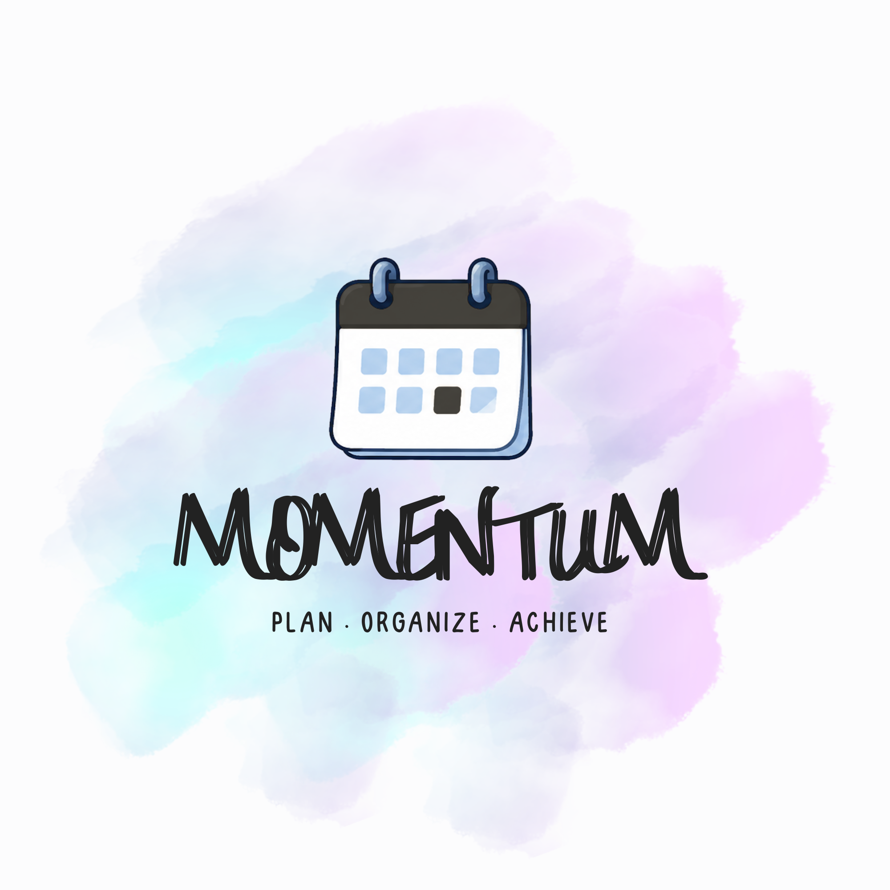
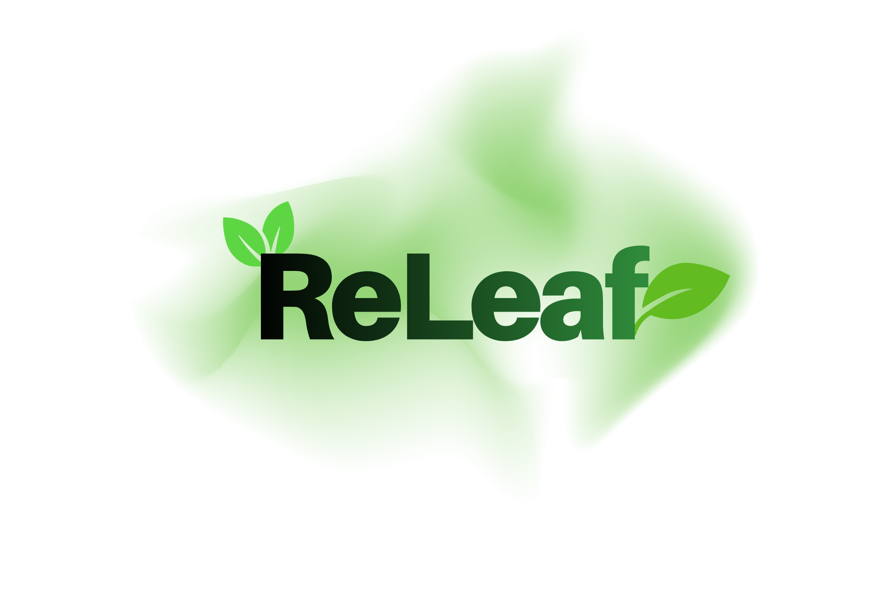

Projects

Momentum
Personal Project
Live Demo
Repo
Momentum is a personal/learning project that lets you add, complete, and remove tasks, with a focus on hour-by-hour deadline ordering.
The app sorts tasks by their closest upcoming deadline so the next thing you need to work on is always front and center.
Tech Stack
- Backend: Java 21, Spring Boot 4
- Persistence: JSON file on disk
- Frontend: Vanilla HTML, CSS, and JavaScript
- Build tool: Maven

ReLeaf
Hackathon Project — Gemini API Award
Live Demo
Backend API
Demo Video
Repo
ReLeaf is a smart urban planning tool designed to help cities and communities combat the Urban Heat Island (UHI) effect. It combines
photorealistic 3D city visualization, real satellite thermal data, and Google's Gemini AI to provide actionable insights for greener, cooler cities.
Tech Stack
- Frontend: React + Vite + Deck.gl
- Backend: Python (FastAPI)
- Map Base: Google Map Tiles API (3D)
- Heat Data: Sentinel-2 (GeoTIFF / LST)
- AI Vision: Google Gemini
- Other Libraries: rasterio, numpy, html2canvas
Folder Sorter
Academic Project
A hierarchical file management system that creates and sorts nested folder/file relationships,
utilizing JSON-based persistence, a GUI system designed with Java Swing, and JUnit testing to ensure code stability.
Tech Stack
- Frontend: Java Swing
- Backend: Java